Bar, grill & Thai fusion · Christchurch
Great food, great feeling.
Where the food has soul and an experience to come back for.
- Now
- HoursMon to Sun 11am–11pm
- Address8 Shirley Road, Christchurch
- Phone+64 3 385 0004
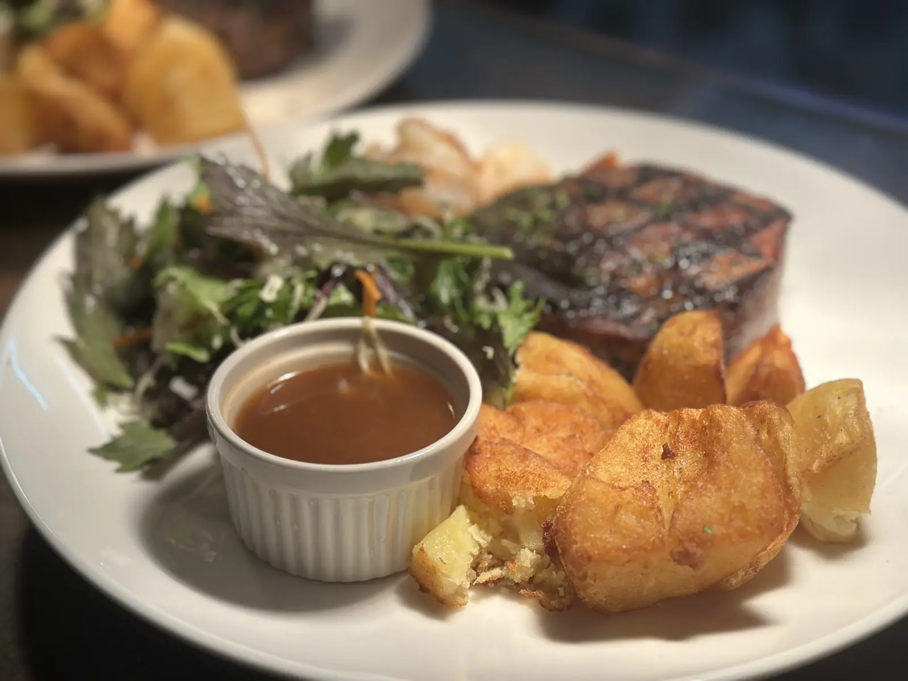
Thai classics, the grill and pizzaDinner menu
Fusion and Thai classics
Beef Cheek Panang
$36Slow-cooked for four hours in a creamy Panang curry
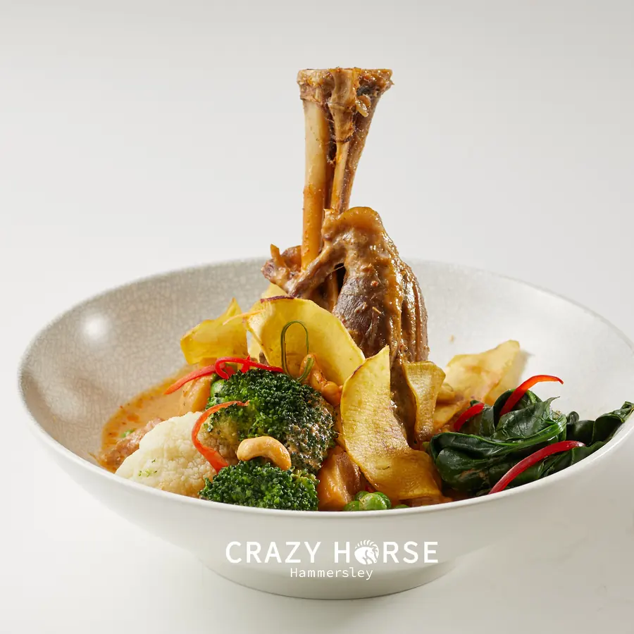
Lamb Shank Massaman
$36Massaman curry, coconut cream, kumara chips, cashews
Green Curry
$28 / $35Chicken or salmon, coconut milk, bamboo shoots
Pad Thai Chicken
$28Egg, bean sprouts and crushed peanuts
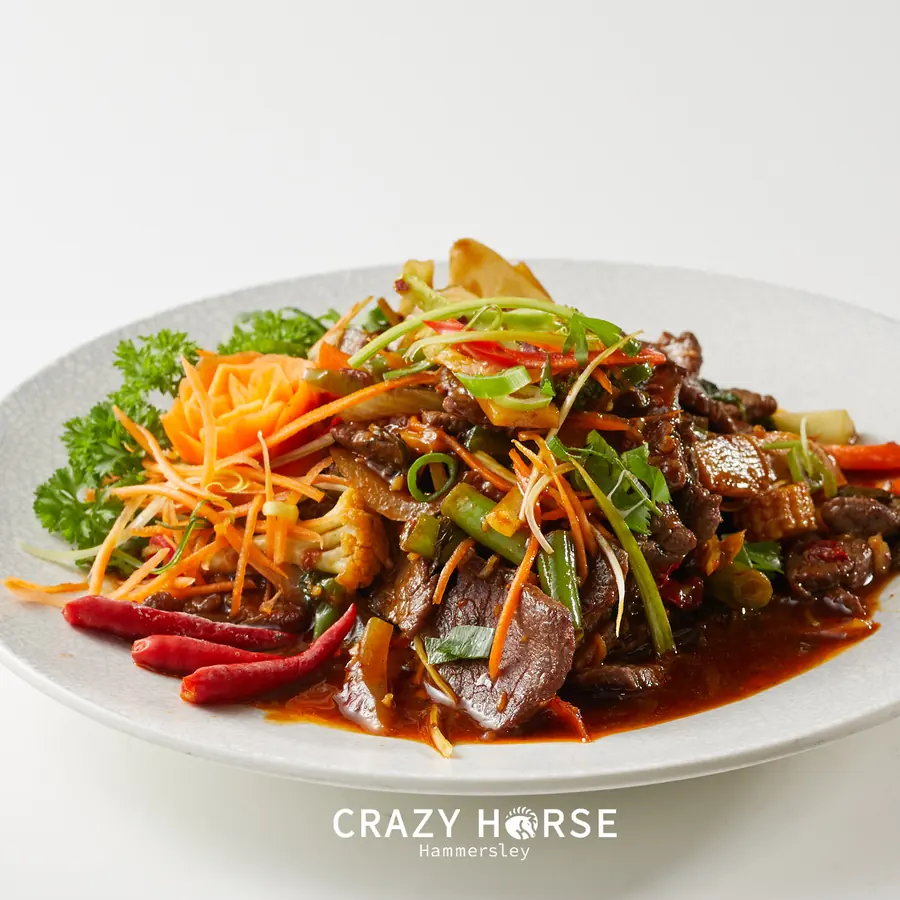
Chilli Basil Beef
$29.5Fresh chillies, garlic, green beans and basil
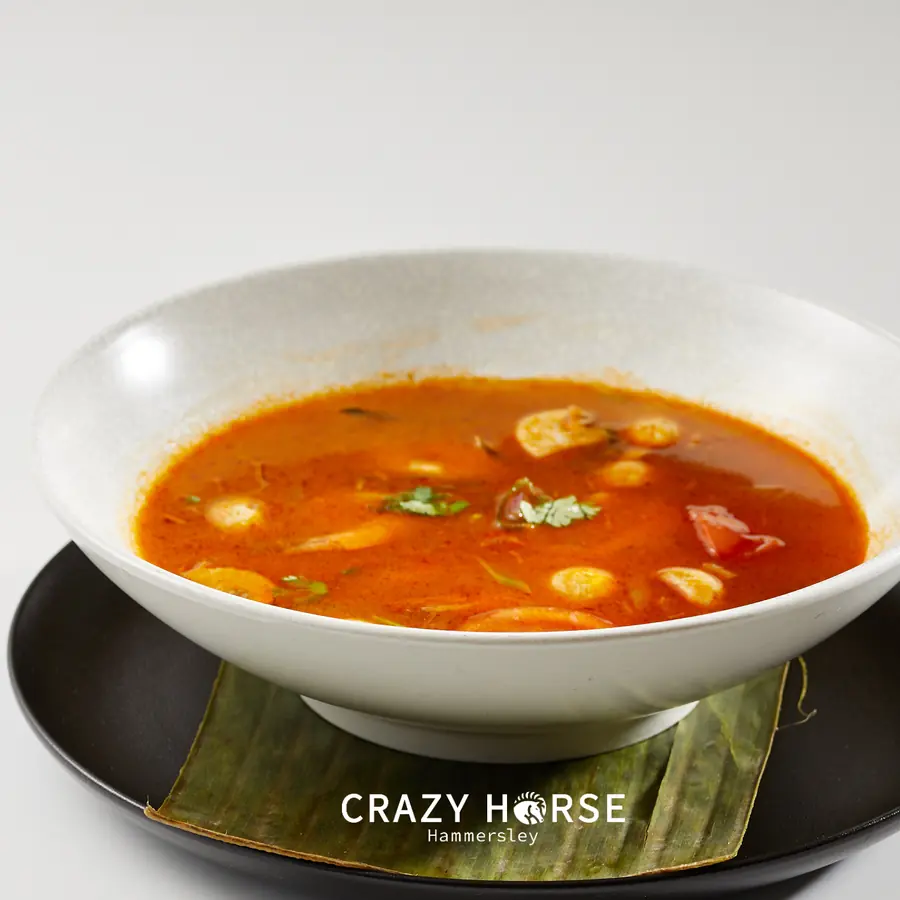
Tom Yum
$28Hot and sour, with prawns or seafood
Hammersley Salad
$32Crispy chicken and prawn, lime, coriander, cashews
Salt & Pepper Calamari
$21With aioli and sweet chilli sauce
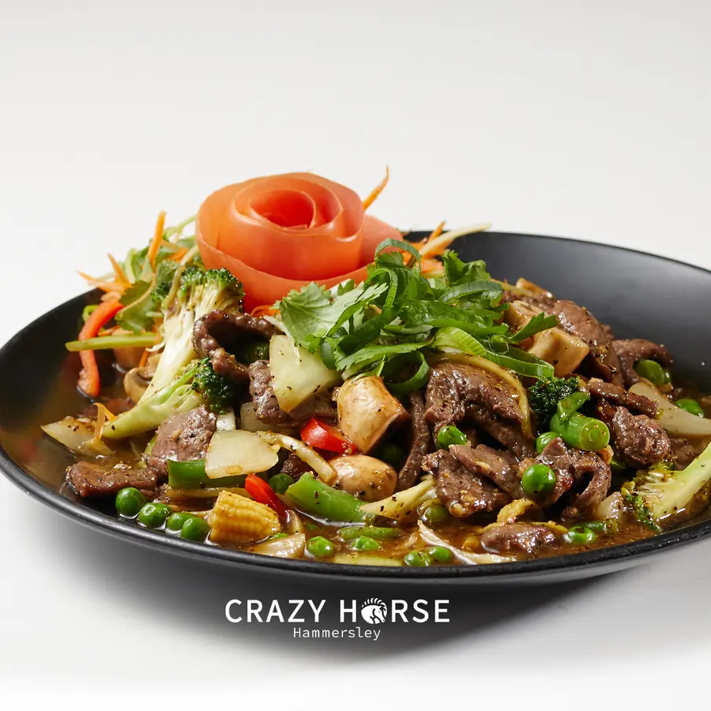
Black Pepper Steak
$36Black pepper and chilli, broccoli, peas and beans

Kiwi classics, tasty Thai
Where classic Kiwi comfort meets Thai-Fusion fun.
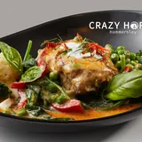
Beef Cheek Panang
$36Beef cheek slow-cooked for four hours in a creamy Panang curry with kaffir lime leaves, chilli, capsicum, spinach and broccoli, topped with peanuts (GF, VO)
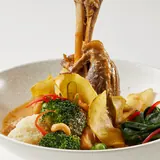
Lamb Shank Massaman
$36Lamb shank slow-cooked in massaman curry and coconut cream with potato, onion, broccoli, spinach, kumara chips and cashew nuts (GF, VO)
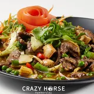
Black Pepper Steak
$36Black pepper and chilli with broccoli, peas and beans, and a dash of mushroom, onion and capsicum
Dancing Prawns
$32Sizzling on a hot plate, wok-tossed with garlic, chilli and the secret Hammersley sauce, with broccoli, carrot, onion and red capsicum (GF)
Green Curry, chicken or salmon
$28 / $35Classic Thai green curry with coconut milk, bamboo shoots, beans, peas, broccoli, carrot and red capsicum (GF, VO)
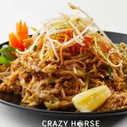
Pad Thai Chicken
$28The world-famous noodle dish: chicken with egg, bean sprouts and crushed peanuts (GF, VO)
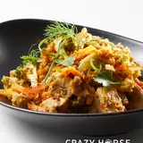
Peanut Sauce, chicken or prawn
$28 / $32Sautéed with broccoli, carrot, mushroom, pumpkin and cabbage, served with house-made peanut sauce (GF, VO)
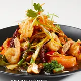
Cashew Nut Chicken
$32Chicken in a house-made sauce with cashew nuts, broccoli, mushroom, tomato, onion and pineapple (GF, VO)
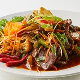
Chilli Basil Beef
$29.5 / Thai style $34.5Stir-fried with fresh chillies, garlic, green beans, onion, capsicum and basil; Thai style comes with a fried egg (GF, VO)
Sweet & Sour Pork
$26.5Sweet and sour stir-fry with fresh Hammersley vegetables (GF, VO)
Fried Rice, chicken or beef
$26Thai-style rice with broccoli, onion, peas, tomato and carrot (GF, VO)
Salt & Pepper Calamari
$21Lightly battered squid, fried golden, with aioli and sweet chilli sauce
Prawn Cocktail
$24Prawns on a bed of lettuce with a zesty house-made Marie Rose sauce (GF)
Fresh Spring Rolls
$16.5Rice paper rolls with rice noodles, fresh herbs, chicken and prawns, with a spicy lemon dipping sauce (GF)
Vegetarian Spring Rolls
$14Crispy rolls filled with vegetables, with Thai sweet chilli sauce (V)
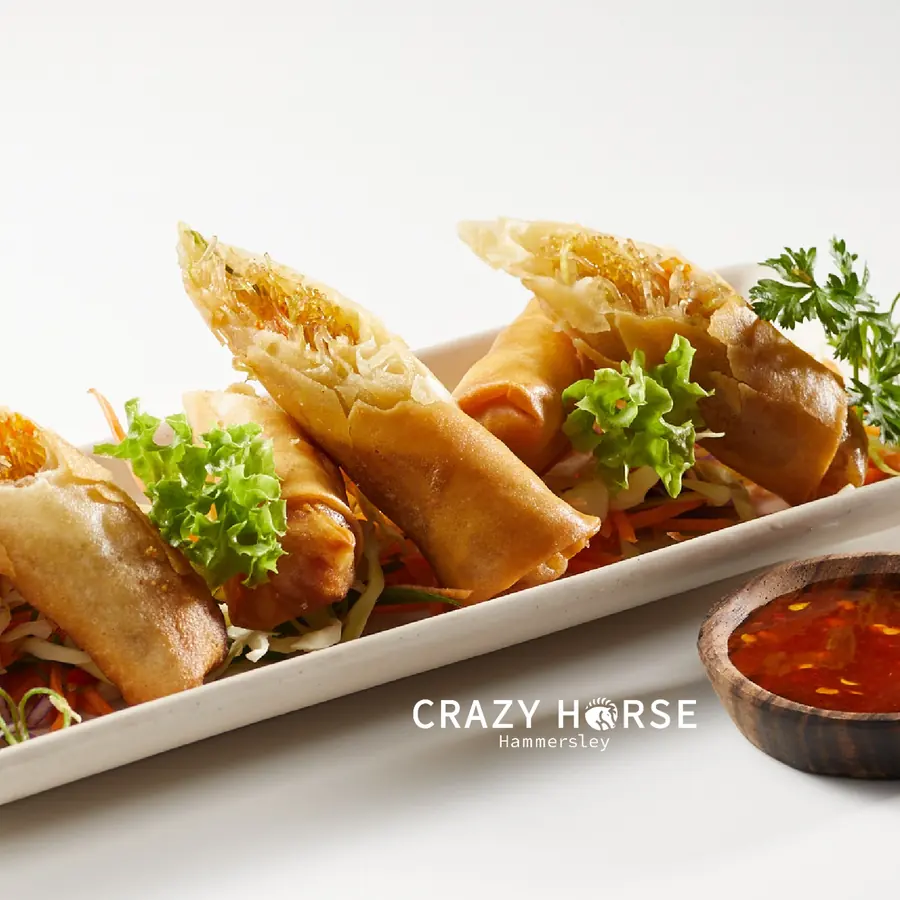
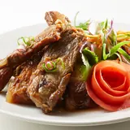
Pork Spareribs
$16Slow-braised, fall-off-the-bone ribs glazed in the signature Crazy BBQ sauce
Crispy Fried Chicken
$18Spicy boneless chicken with sweet chilli sauce and house-made Crazy creamy sauce
Crispy Hash Browns
$12House-made hash brown cubes with Crazy creamy sauce (V)
Loaded Beef Nachos
$26 / snack $16Beef, beans, guacamole, jalapeño and sour cream (GF)
Roti Bread
$8 / double $14Thai-style pan-fried roti with condensed cream (V)
Tom Yum, prawn or seafood
$28The classic hot and sour Thai soup with lemongrass, kaffir lime leaves, tomato and mushrooms (GF, VO)
Seafood Chowder
$26Seafood in a creamy soup with potato, onion, celery and garlic (GF)
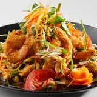
Hammersley Salad
$32The signature crispy chicken and prawn with lime, coriander, cucumber, carrot, tomato, red onion, cashew nuts and Hammersley sauce (GF, VO)
Thai Beef Salad
$34Seared grass-fed beef strips on mixed greens with herbs, mint, coriander and a spicy lime-chilli dressing (GF, VO)
Caesar Salad
$28Cos lettuce, parmesan, crispy bacon, croutons and a creamy anchovy dressing, topped with grilled chicken (GF, VO)
Sauces: peppercorn or mushroom $4, red wine jus $5.
Rib-Eye Steak & Roasted Potatoes
$42Rib-eye with roasted potatoes and green salad or veges
Sirloin Steak & Fries
$39Sirloin with French fries and green salad or veges; add an egg for $3.5
Surf ’n’ Turf Rib-Eye & Prawn
$45Rib-eye, king prawns, French fries and green salad
Fillet of Salmon
$42With green salad, pumpkin purée and honey-glazed beetroot
Pan Fried Pork Loin
$32On a mild, tangy, creamy white parsley sauce with crispy roast potatoes
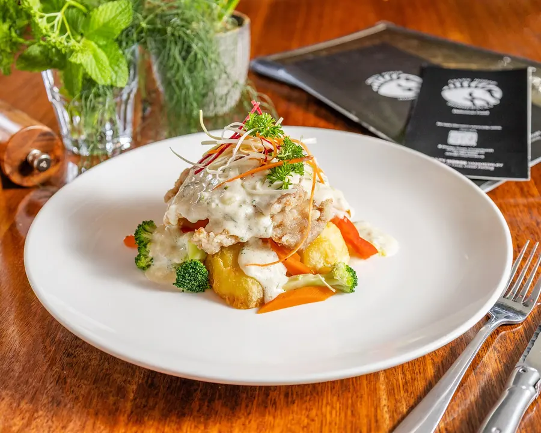
Hawaiian Pizza
$22Ham or mushroom, pineapple and cheese on the cheesy stuffed crust (VO)
Pepperoni Pizza
$22Pepperoni, capsicum and mushroom on the cheesy stuffed crust
Chicken & Cranberry Pizza
$25Chicken, cranberry, apricot and cheese on the cheesy stuffed crust
Beef Cheek Pizza
$27Slow-cooked beef cheek and capsicum on the cheesy stuffed crust
Fettuccini Pasta
$28Creamy sauce with chicken, mushrooms and bacon, topped with parmesan
Brunch is served from 11am to 3pm.
Big Breakfast
$29.5Bacon, eggs, mushrooms, tomato, sausage, hash brown, hollandaise and toasted wholemeal bread
Eggs Benedict
$25Poached eggs with hollandaise, mushroom and spinach on toasted wholegrain; add bacon $4 or smoked salmon $6 (GF, VO)
Bacon & Egg Croissant
$21House-made croissant with bacon and egg; add a hash brown for $3.5
Open Steak Sandwich
$28Steak strips with chimichurri, mushroom, cherry tomato and spinach on wholemeal bread
Crazy Burger & Fries
$26Chicken or beef
Omelette
$21Bacon, or mushroom, spinach, cheese, red onion and capsicum (GF, VO)
Steak, Eggs & Chips
$29150 g sirloin cooked as you like, a free-range egg, side salad and fries
French Toast
$21Cinnamon French toast with fresh banana and crispy bacon, whipped cream and maple syrup
All house-made, served with cream or ice cream.
Sticky Date Pudding
$20Raspberry Cheesecake
$18Crème Brûlée
$18Mum’s Apple Crumble
$18Affogato
$10Espresso and ice cream; with Kahlúa or Baileys $20
Prices from the dinner menu (May 2026). GF gluten free, VO vegetarian or vegan option with tofu or veg.
See the full menuA name born from adventure, friendship, and a touch of crazy.
In 2014 two friends, a Kiwi and a Thai, lost their way in a bamboo forest north of Chiang Mai and found it again by the ears of a rock called Crazy Horse. Three years later Jules and Jummi took over Thai Orchid and opened its sibling, Crazy Horse.

Live music, open mic and Latin nights
Jazz and soul every Thursday, open mic or karaoke on Fridays, and salsa, cumbia and merengue on Saturdays from 7:30pm.
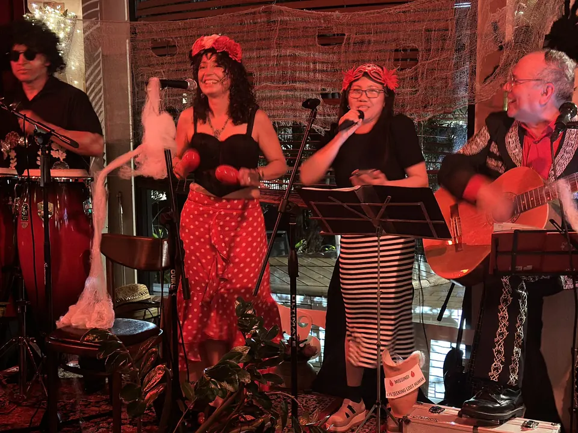

Bar, grill & fusion
The old Hammersley Engineering office on this corner became Hammersleys Bar some 30 years ago. Today it opens 7 days from 11am.
Find us on Shirley Road
| Monday | 11am–11pm |
|---|---|
| Tuesday | 11am–11pm |
| Wednesday | 11am–11pm |
| Thursday | 11am–11pm |
| Friday | 11am–11pm |
| Saturday | 11am–11pm |
| Sunday | 11am–11pm |
- Off-street parking on the corner of Hills & Shirley Road.
- Kitchen 11am to 3pm and 5pm to 9pm, until 9:30pm on Friday and Saturday.
- Quiz on Wednesdays, blues on Thursdays, karaoke or open mic on Fridays and parties on Saturdays.
- Takeaway and functions: call +64 3 385 0004.